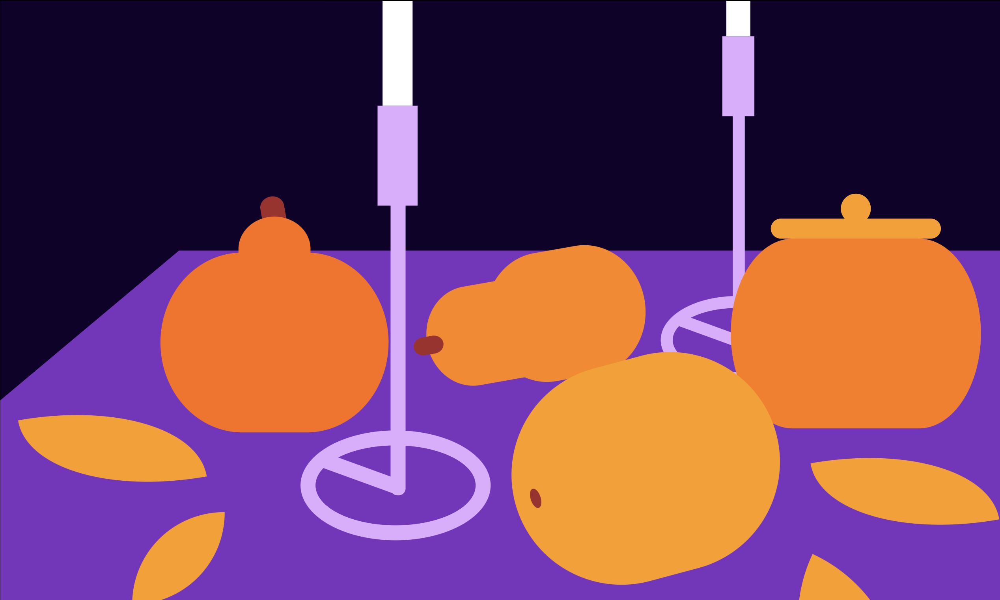
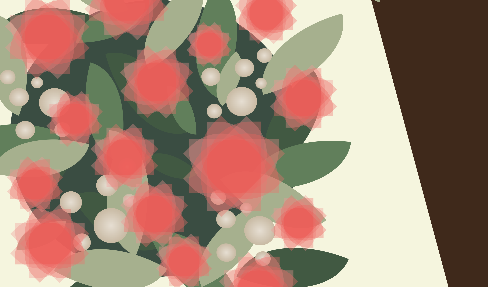

These two sketches above are coded interpretations of still life scenes from a video provided to us. The first sketch uses absolute positioning, whereas the second employs positioning relative to the viewport. Click through to the sites below to see how they change when the viewport is resized!
Skills Used
css stylesheets, absolute and relative positioning, drawing shapes with css
Project Links